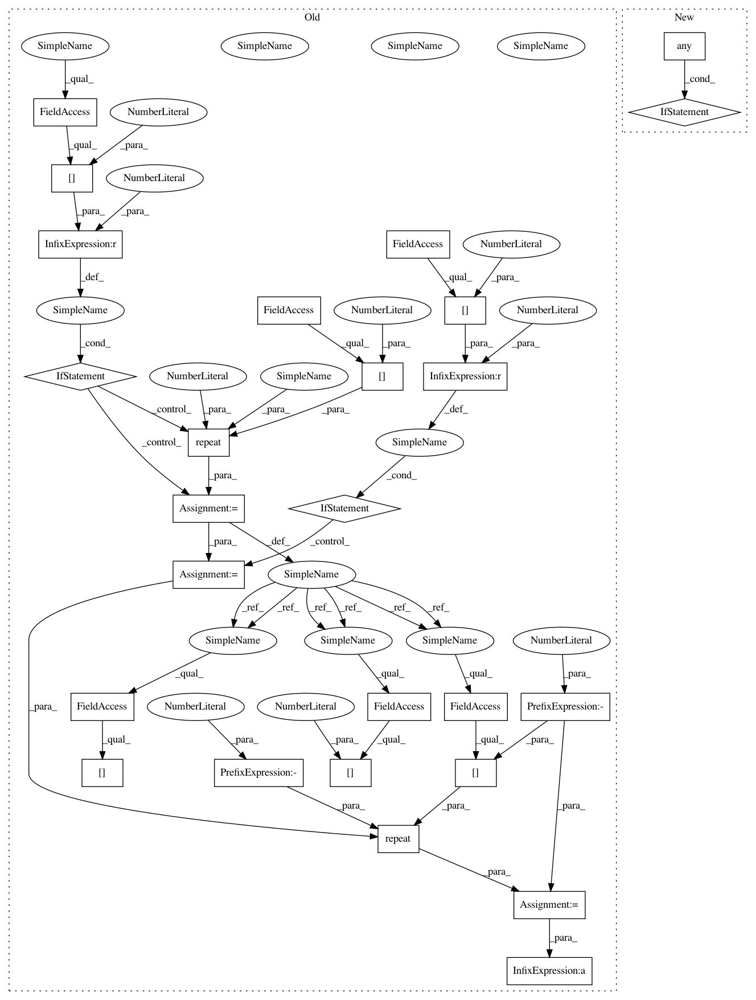

eb52df01d6fa9beb97d367ff091d32186c91ea95,geomstats/geometry/poincare_ball.py,PoincareBallMetric,exp,#PoincareBallMetric#Any#Any#,87
Before Change
tangent_vec = gs.to_ndarray(tangent_vec, to_ndim=2)
base_point = gs.to_ndarray(base_point, to_ndim=2)
if base_point.shape[0] == 1:
base_point = gs.repeat(base_point, tangent_vec.shape[0], axis=0)
if tangent_vec.shape[0] == 1:
tangent_vec = gs.repeat(tangent_vec, base_point.shape[0], axis=0)
norm_base_point = gs.to_ndarray(
gs.linalg.norm(base_point, axis=-1), 2, axis=-1)
norm_base_point = gs.to_ndarray(norm_base_point, to_ndim=2)
norm_base_point = gs.repeat(
norm_base_point, base_point.shape[-1], axis=-1)
den = 1 - norm_base_point**2
norm_tan = gs.to_ndarray(gs.linalg.norm(
tangent_vec, axis=-1), 2, axis=-1)
norm_tan = gs.repeat(norm_tan, base_point.shape[-1], -1)
lambda_base_point = 1 / den
zero_tan = gs.isclose((tangent_vec * tangent_vec).sum(axis=-1), 0.)
if norm_tan[zero_tan].shape[0] != 0:
norm_tan[zero_tan] = EPSILON
direction = tangent_vec / norm_tan
factor = gs.tanh(lambda_base_point * norm_tan)
exp = self.mobius_add(base_point, direction * factor)
After Change
zero_tan = gs.isclose((tangent_vec * tangent_vec).sum(axis=-1), 0.)
if gs.any(zero_tan):
if exp[zero_tan].shape[0] != 0:
exp[zero_tan] = base_point[zero_tan]
return exp
def log(self, point, base_point):
Compute Riemannian logarithm of a point wrt a base point.
In pattern: SUPERPATTERN
Frequency: 4
Non-data size: 26
Instances
Project Name: geomstats/geomstats
Commit Name: eb52df01d6fa9beb97d367ff091d32186c91ea95
Time: 2020-04-09
Author: gerald@pop-os.localdomain
File Name: geomstats/geometry/poincare_ball.py
Class Name: PoincareBallMetric
Method Name: exp
Project Name: geomstats/geomstats
Commit Name: eb52df01d6fa9beb97d367ff091d32186c91ea95
Time: 2020-04-09
Author: gerald@pop-os.localdomain
File Name: geomstats/geometry/poincare_ball.py
Class Name: PoincareBallMetric
Method Name: log
Project Name: geomstats/geomstats
Commit Name: ba9524030335193a49f0745be632fbe229e7614d
Time: 2020-04-09
Author: gerald@pop-os.localdomain
File Name: geomstats/geometry/poincare_ball.py
Class Name: PoincareBallMetric
Method Name: exp
Project Name: geomstats/geomstats
Commit Name: ba9524030335193a49f0745be632fbe229e7614d
Time: 2020-04-09
Author: gerald@pop-os.localdomain
File Name: geomstats/geometry/poincare_ball.py
Class Name: PoincareBallMetric
Method Name: log
Project Name: geomstats/geomstats
Commit Name: eb52df01d6fa9beb97d367ff091d32186c91ea95
Time: 2020-04-09
Author: gerald@pop-os.localdomain
File Name: geomstats/geometry/poincare_ball.py
Class Name: PoincareBallMetric
Method Name: exp